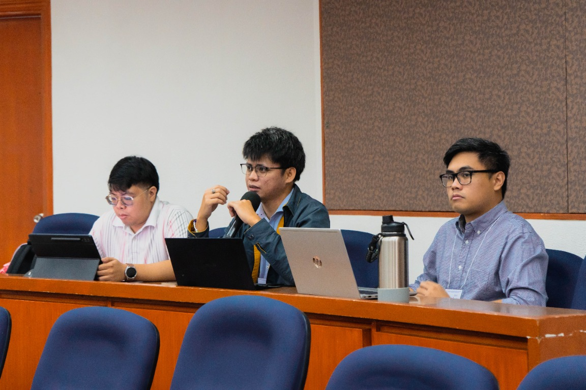
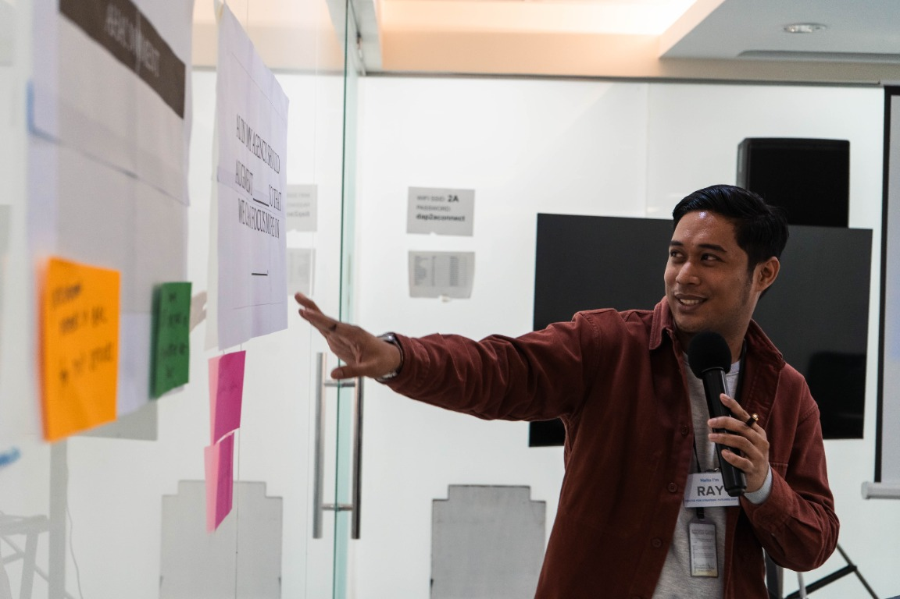
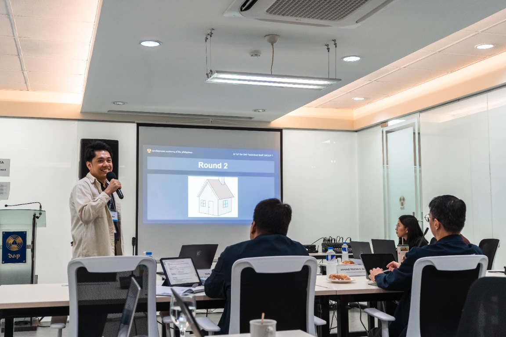
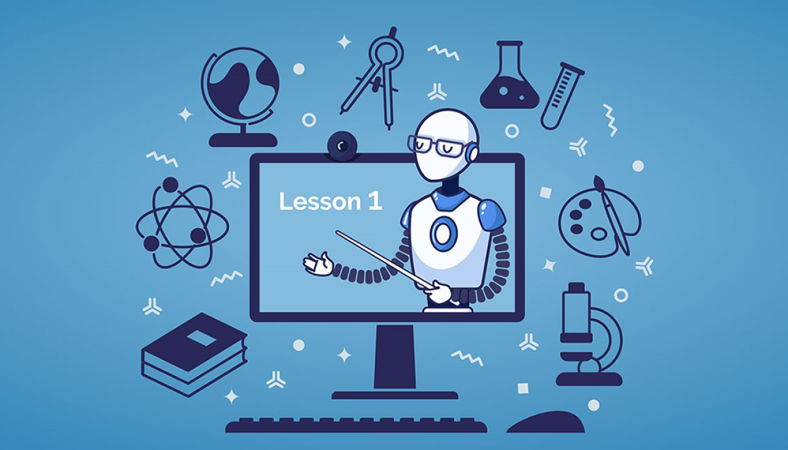
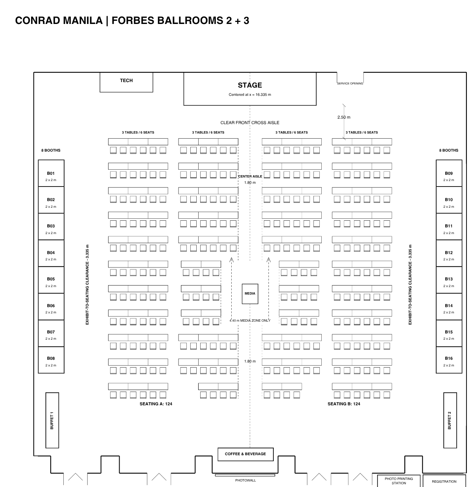
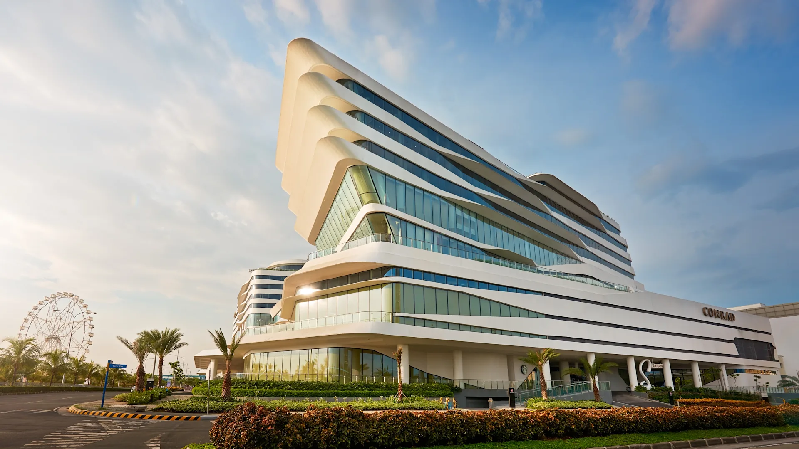

UNDERSTAND THE SHIFT01
Build a shared understanding
See how digital transformation and responsible AI integration can advance a more effective, responsive, and accountable government.
FOUNDATIONS · ACCOUNTABILITY
National Capability-Building Program on AI

▦ 22 October 2026 | 9:00 AM – 1:30 PM
⌖ Conrad Manila, Pasay City
Organized by the Development Academy of the Philippines
PARTICIPANTS
PROGRAM SETS
LIVE STAGE DEMOS
EXHIBITORS
Artificial intelligence is changing how organizations work, make decisions, and deliver services. For government, this means moving beyond digital transformation (DX) to ask how AI can make public services more responsive, decisions better informed, and operations more efficient.
Beyond DX is a forward-looking vision of government. It builds on digital transformation and brings AI into services, workflows, and decision-making responsibly. It invites agencies to anticipate what is coming, decide what kind of government they want to become, and take practical steps from wherever they are starting.
The forum is part of the Development Academy of the Philippines’ National Capability-Building Program on AI (AI CapB). Through video perspectives, live demonstrations, audience interaction, and a curated showcase, it connects public-sector capabilities with real applications, real institutional experiences, and emerging approaches to sustained AI transformation.



Beyond DX is the next stage of government transformation, sometimes called AI transformation (AX). It is about more than new tools. It means change in:
BEYOND DX FORUM
Three outcomes from a half-day of perspectives, demonstrations, and conversation.
See how digital transformation and responsible AI integration can advance a more effective, responsive, and accountable government.
FOUNDATIONS · ACCOUNTABILITY
Explore practical AI applications, implementation experiences, and lessons from government and selected partners.
LIVE DEMOS · LESSONS LEARNED
Share your insights on future priorities, practical next steps, and opportunities for collaboration toward responsible and sustained AI adoption.
COLLABORATION · NEXT STEPS
Thursday, 22 October 2026 | Conrad Manila
Indicative program. Subject to change.
| 8:30 – 9:00 AM | Registration |
| 9:00 – 9:05 AM | Prayer and National Anthem DAP Choir |
| 9:05 – 9:15 AM | Opening Remarks Leocadio S. Sebastian, PhD, CESO I |
| 9:15 – 9:30 AM | Keynote Address Maria Francesca M. Del Rosario “Beyond DX: Reimagining Government and Public Value in the Age of AI” |
| 9:30 – 9:40 AM | Photo Opportunity |
| SET 1: BUILDING THE FOUNDATIONS FOR AI-READY GOVERNMENT Examine the governance and digital foundations required for responsible AI transformation in government. | |
| 9:40 – 9:50 AM | Beyond DX Perspectives (Video) DEPDev: Governing the Shift · DICT: Powering AI Transformation |
| 9:50 – 10:20 AM | AI in Action: Government Solutions (Stage Demo, 7 minutes each) DBM: to be announced · ARTA: TALA · DOST-ASTI: to be announced · Quezon City Government: LyfSaver PH |
| 10:20 – 10:25 AM | Ask the Implementers Audience pulse and live questions to the teams behind the solutions. |
| SET 2: MOVING FROM EXPERIMENTATION TO ADOPTION Examine how procurement and experimentation can support responsible adoption and scale. | |
| 10:25 – 10:35 AM | Beyond DX Perspectives (Video) GPPB-TSO: What to Buy, Build, and Share · DOST-ASTI: From Pilots to Scale |
| 10:35 – 11:05 AM | AI in Action: Private-Sector Solutions for Public Value Hiraia.org: Hiraia · DARC Labs: A-Eye · Packworks: Sari IQ |
| 11:05 – 11:10 AM | Ask the Implementers Audience pulse and live questions to the teams behind the solutions. |
| SET 3: INSTITUTIONALIZING SUSTAINED AI TRANSFORMATION Discover approaches to capacity building and long-term organizational transformation. | |
| 11:10 – 11:15 AM | Beyond DX Perspectives (Video) DAP: Equipping Government for AI |
| 11:15 – 11:45 AM | AI in Action: DAP Innovations CSF: TrendsWatch 2.0 · Services Group: Project ORACLE · CCD: TUKLAS |
| 11:50 – 11:55 AM | Ask the Implementers Audience pulse and live questions to the teams behind the solutions. |
| 11:55 AM – 12:00 PM | Connecting the Dots: From Insight to Action Synthesis of the key messages and insights from the three sets |
| 12:00 – 12:05 PM | From Pulse to Insight Presentation of the audience-pulse results |
| 12:05 – 12:10 PM | Closing Message Magdalena L. Mendoza |
| 12:10 – 1:30 PM | Lunch, AI Showcase, and Networking |
Maria Francesca “Sasa” M. Del Rosario
Undersecretary, Department of Energy (DOE)
Keynote Speech
Beyond DX: Reimagining Government and Public Value in the Age of AI
After the program, step into the exhibit area to see selected applications up close and meet the teams behind them. 16 exhibitors will be on the floor.
See applications up close
Meet the teams behind them

Find opportunities to collaborate
Select a booth on the floor plan to explore its featured technology.

The forum is designed for public-sector institutions and personnel who can influence, support, or implement AI adoption in government.

⌖ Seaside Boulevard corner Coral Way, Mall of Asia Complex, Pasay City 1300
▦ Thursday, 22 October 2026 | Registration opens 8:30 AM | Program 9:00 AM – 1:30 PM
Confirm your attendance at the Beyond DX Forum.
22 October 2026 | Conrad Manila, Pasay City